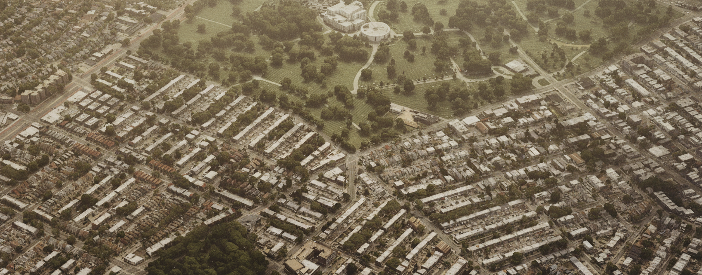
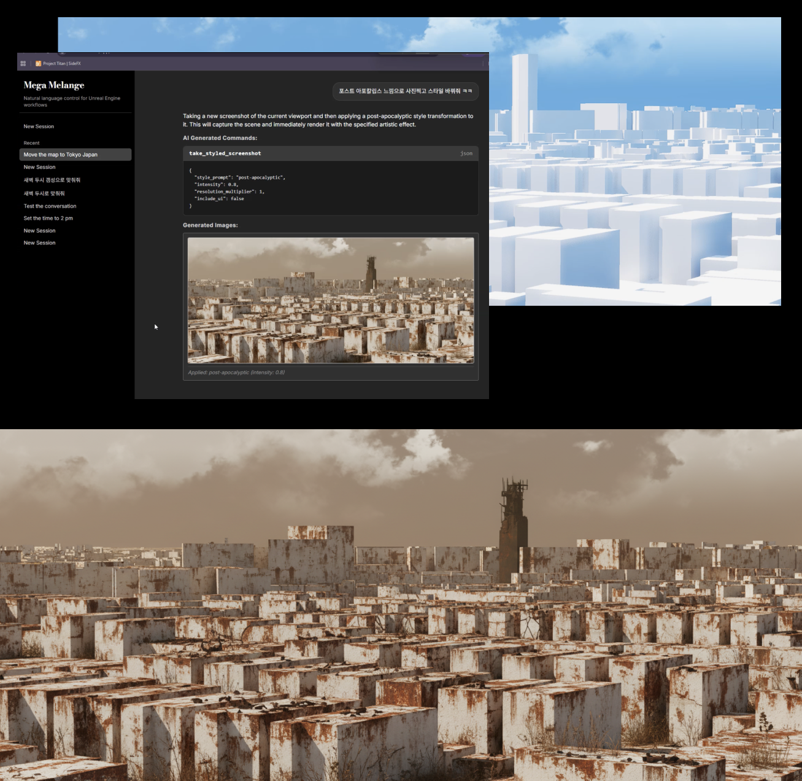
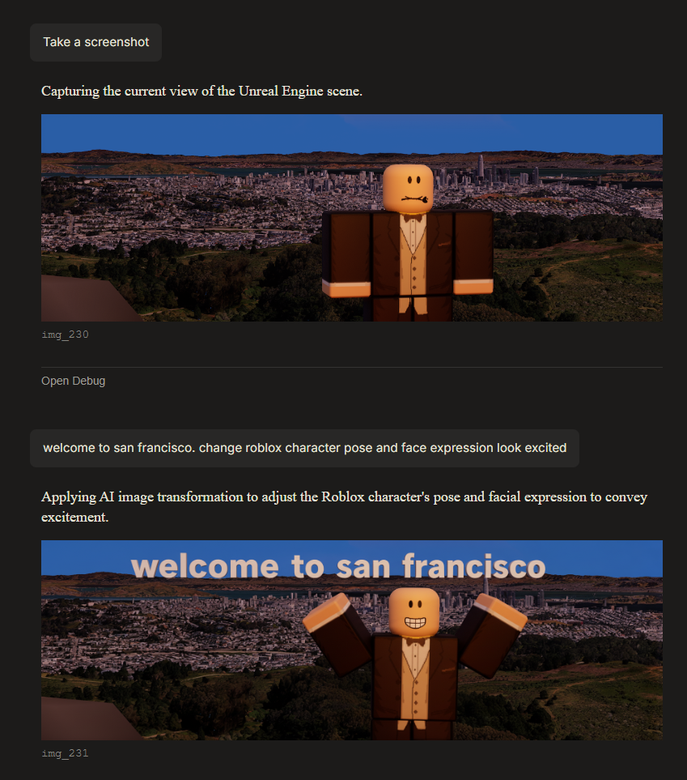
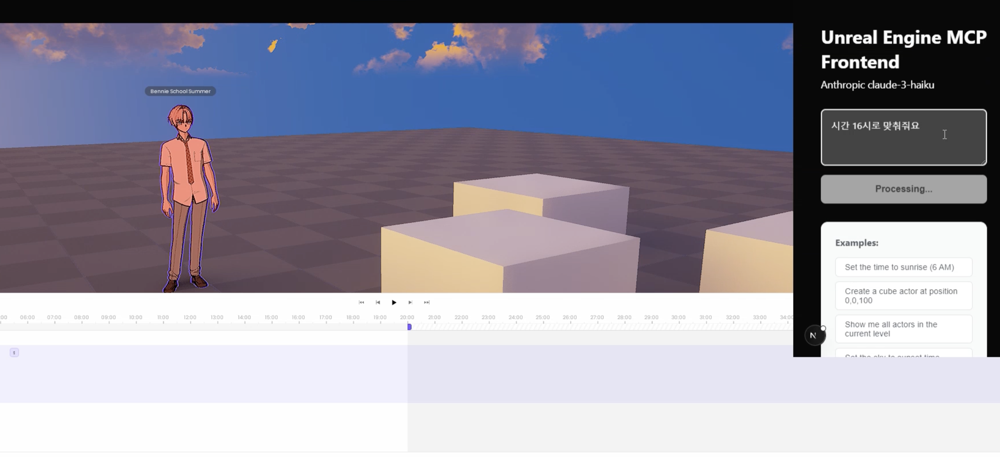

Live UE Scene Bridge
Sets up outdoor backgrounds from natural language, then runs AI image generation to match a target style or concept
Problem
Setting up outdoor scenes required manually configuring terrain (Cesium) location, weather/time-of-day (UDS/UDW), lighting, and camera placement -- and non-developer roles needed to iterate on this quickly.
Solution
Natural language goes through an AI layer (Claude/Gemini), which converts it to commands that a C++ plugin executes in the UE editor in real time.
Usage Examples
"Show me downtown Tokyo"
"Go to San Francisco"
"Set the time to 6 PM"
"Give me warm tones"
"Set up a cold noon scene"
3-Layer Architecture
Web UI / CLI → HTTP:34115 → FastAPI + NLP (Claude/Gemini)
↓
┌──────────────┬──────────────┬──────────────┐
│ UE C++ Plugin│ Nano Banana │ Veo-3 │
│ TCP:55557 │ Image Gen │ Video Gen │
└──────────────┴──────────────┴──────────────┘Core — Cesium + UDS Integration
The most invested part. By combining Cesium terrain data with Ultra Dynamic Sky, a single natural language line sets up an outdoor background with location + time of day + weather + mood. Adding Nano Banana (i2i) on top transforms it into the desired concept or feel, so you go from a text prompt to a styled concept image without leaving the tool.


Roblox Integration — Business Demo
Fetched FBX via Roblox API, imported into UE, placed characters on generated backgrounds, then produced images/videos with Nano Banana/Veo-3. Demo content targeting CEO, planners, and team leads.

Result
| Category | Result |
|---|---|
| Outdoor Scene Setup | One-step composition of location + time + weather + mood via natural language |
| i2i Pipeline | Scene to concept/mood transformation via Nano Banana |
| Service Integration | 4 services (UE, Nano Banana, Veo-3, Roblox) |
| Audience | Demo for CEO, planners, team leads — POC |
| Outcome | Handed off to product team (follow-up paused due to background automation dev cost) |

Early prototype — real-time UE viewport control via natural language input